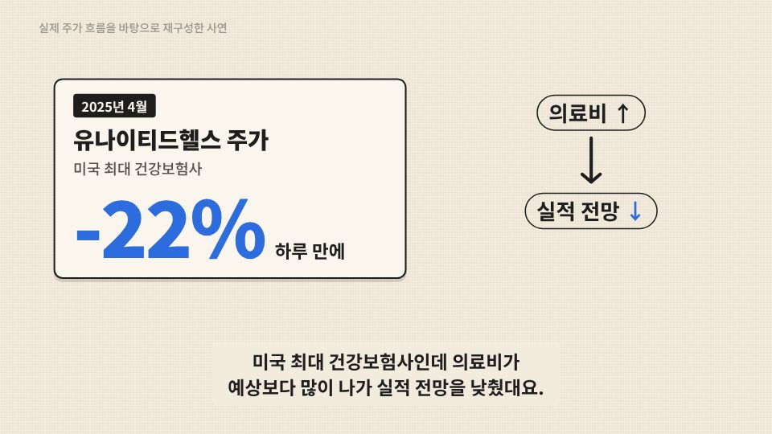
S01-2 문장 2 · 0:13.5 · 크림
- 2 미국 최대 건강보험사인데 의료비가 / 예상보다 많이 나가 실적 전망을 낮췄대요.
연출 1: 뉴스 카드(2025년 4월 · 유나이티드헬스 주가) → -22% 카운트다운(파랑) / 2: '미국 최대 건강보험사' / (뒷줄) 의료비 ↑ → 실적 전망 ↓ / 3: 흐름도 퇴장, 생각 말풍선
연결 근거 문장 1 '2025년 4월, 유나이티드헬스 … 22% 넘게' → 뉴스 카드·-22% / 문장 2 '최대 건강보험사, 의료비가 예상보다 많이 나가 실적 전망을 낮췄대요' → 흐름도 / 문장 3 '큰 회사가 망하진 않을 테니 지금이 싸게 살 때' → 말풍선
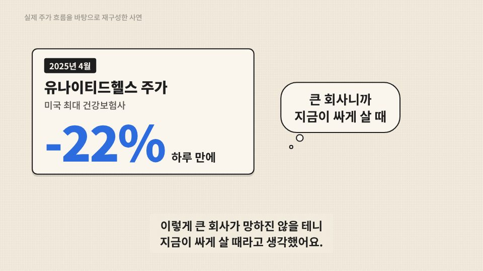
S01 문장 1–3 · 0:19.2 · 크림
- 1 2025년 4월, 유나이티드헬스 주가가 하루 만에 22% 넘게 떨어졌어요.
- 2 미국 최대 건강보험사인데 의료비가 / 예상보다 많이 나가 실적 전망을 낮췄대요.
- 3 이렇게 큰 회사가 망하진 않을 테니 지금이 싸게 살 때라고 생각했어요.
연출 1: 뉴스 카드(2025년 4월 · 유나이티드헬스 주가) → -22% 카운트다운(파랑) / 2: '미국 최대 건강보험사' / (뒷줄) 의료비 ↑ → 실적 전망 ↓ / 3: 흐름도 퇴장, 생각 말풍선
연결 근거 문장 1 '2025년 4월, 유나이티드헬스 … 22% 넘게' → 뉴스 카드·-22% / 문장 2 '최대 건강보험사, 의료비가 예상보다 많이 나가 실적 전망을 낮췄대요' → 흐름도 / 문장 3 '큰 회사가 망하진 않을 테니 지금이 싸게 살 때' → 말풍선
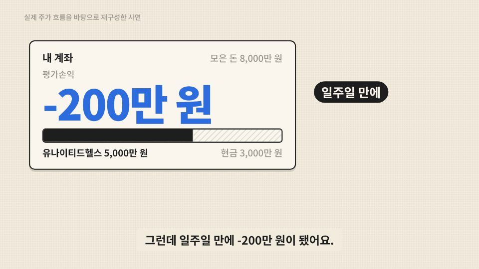
S02 문장 4–5 · 0:27.2 · 크림
- 4 모아 둔 8천만 원 중 5천만 원으로 먼저 샀죠.
- 5 그런데 일주일 만에 -200만 원이 됐어요.
연출 4: 계좌 카드 등장(모은 돈 8,000만 원), 종목 막대 0 → 5,000만 원, 평가손익 0원 / 5: '일주일 만에' 칩, 평가손익 0 → -200만 원(파랑)
연결 근거 문장 4 '모아 둔 8천만 원 중 5천만 원으로 먼저 샀죠' → 카드·막대 / 문장 5 '일주일 만에 -200만 원' → 손익 카운트
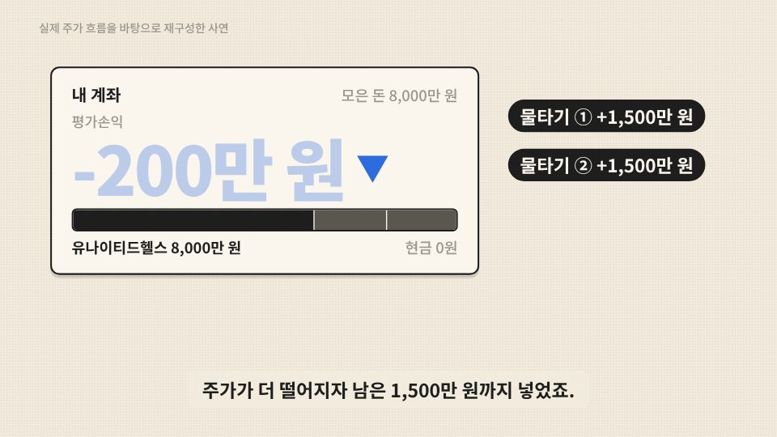
S03-7 문장 7 · 0:37.3 · 크림
- 7 주가가 더 떨어지자 남은 1,500만 원까지 넣었죠.
연출 6: S02 카드 막대에 물타기 ① +1,500만 원 조각 / 7: 평가손익이 흐려지며 ▼, 물타기 ② +1,500만 원(현금 0원) / 8: 칩 퇴장, '평단 ↓' + 말풍선
연결 근거 문장 6 '평단을 낮추면 … 1,500만 원을 더 샀어요' / 문장 7 '주가가 더 떨어지자 남은 1,500만 원까지' → ▼(대본에 금액이 없어 숫자는 흐리게) / 문장 8 '평단이 내려갔으니 조금만 반등해도 본전' → 말풍선
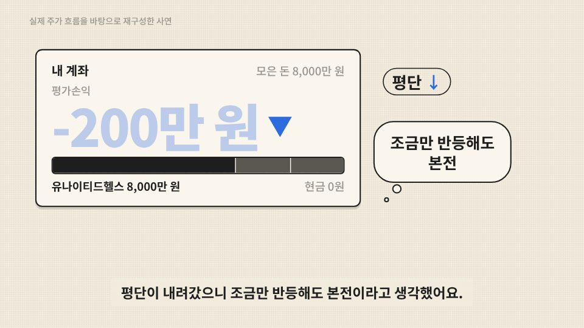
S03 문장 6–8 · 0:42.5 · 크림
- 6 평단을 낮추면 된다는 말만 믿고 그날 바로 1,500만 원을 더 샀어요.
- 7 주가가 더 떨어지자 남은 1,500만 원까지 넣었죠.
- 8 평단이 내려갔으니 조금만 반등해도 본전이라고 생각했어요.
연출 6: S02 카드 막대에 물타기 ① +1,500만 원 조각 / 7: 평가손익이 흐려지며 ▼, 물타기 ② +1,500만 원(현금 0원) / 8: 칩 퇴장, '평단 ↓' + 말풍선
연결 근거 문장 6 '평단을 낮추면 … 1,500만 원을 더 샀어요' / 문장 7 '주가가 더 떨어지자 남은 1,500만 원까지' → ▼(대본에 금액이 없어 숫자는 흐리게) / 문장 8 '평단이 내려갔으니 조금만 반등해도 본전' → 말풍선
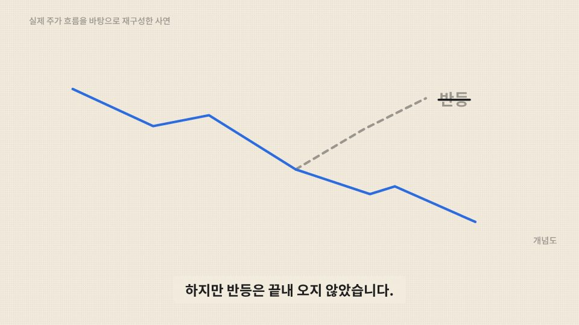
S04 문장 9 · 0:45.7 · 크림
연출 9: 내려가는 선 → 회색 점선(반등) → 실제 선은 계속 아래로 → '반등'에 취소선
연결 근거 문장 9 '반등은 끝내 오지 않았습니다'
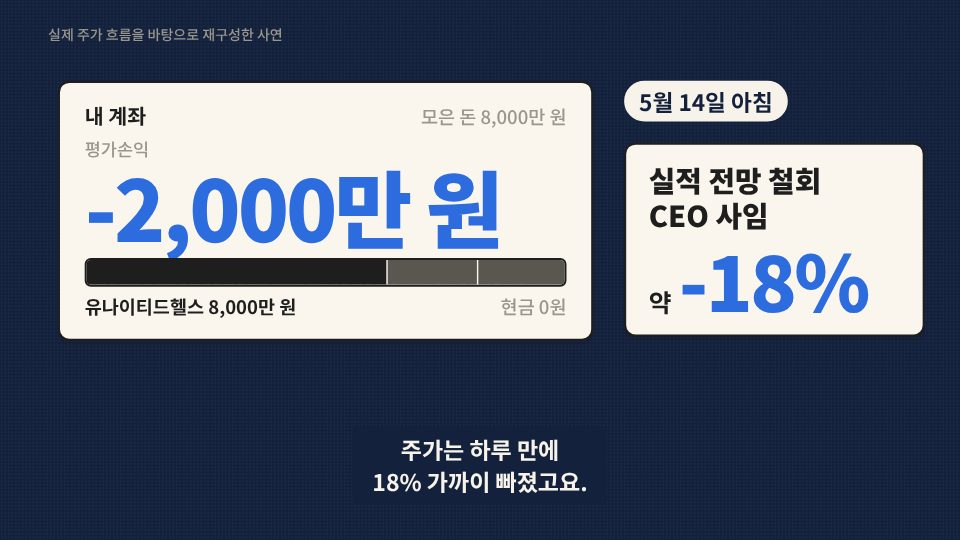
S05 문장 10–12 · 1:04.9 · 네이비 · 와이프
- 10 5월 14일 아침, 눈을 뜨자마자 계좌를 열었더니 -2천만 원이 찍혀 있었어요.
- 11 밤사이 회사가 그해 실적 전망을 아예 거둬들이고 / CEO까지 물러났다는 소식이 나왔더라고요.
- 12 주가는 하루 만에 18% 가까이 빠졌고요.
연출 10: 찢어진 종이 전환, '5월 14일 아침' 칩, S02 카드 평가손익 -200만 → -2,000만 원 + 흔들림 / 11: 뉴스 카드 '실적 전망 철회' / (뒷줄) 'CEO 사임' / 12: 약 -18% 카운트
연결 근거 문장 10 '5월 14일 아침 … -2천만 원' / 문장 11 '실적 전망을 아예 거둬들이고 CEO까지 물러났다' / 문장 12 '18% 가까이 빠졌고요'
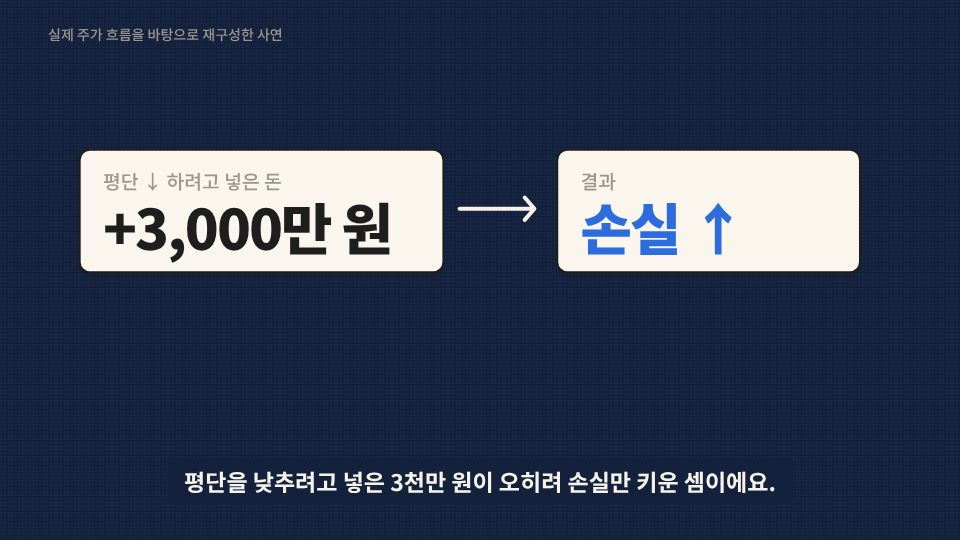
S06-13 문장 13 · 1:10.2 · 네이비
- 13 평단을 낮추려고 넣은 3천만 원이 오히려 손실만 키운 셈이에요.
연출 13: 카드 '평단 ↓ 하려고 넣은 돈 +3,000만 원' → 화살표 → '손실 ↑'(파랑) / 14: 노랑 '물타기' 버튼이 눌림(손은 그리지 않음)
연결 근거 문장 13 '평단을 낮추려고 넣은 3천만 원이 오히려 손실만 키운' / 문장 14 '물타기 버튼을 누른'
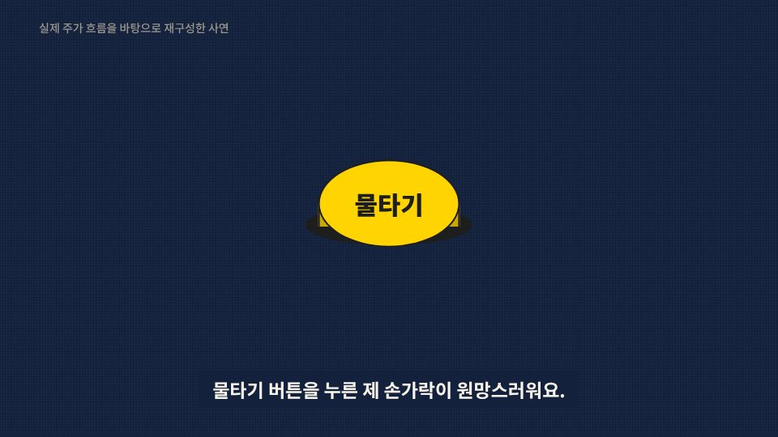
S06 문장 13–14 · 1:14.2 · 네이비
- 13 평단을 낮추려고 넣은 3천만 원이 오히려 손실만 키운 셈이에요.
- 14 물타기 버튼을 누른 제 손가락이 원망스러워요.
연출 13: 카드 '평단 ↓ 하려고 넣은 돈 +3,000만 원' → 화살표 → '손실 ↑'(파랑) / 14: 노랑 '물타기' 버튼이 눌림(손은 그리지 않음)
연결 근거 문장 13 '평단을 낮추려고 넣은 3천만 원이 오히려 손실만 키운' / 문장 14 '물타기 버튼을 누른'
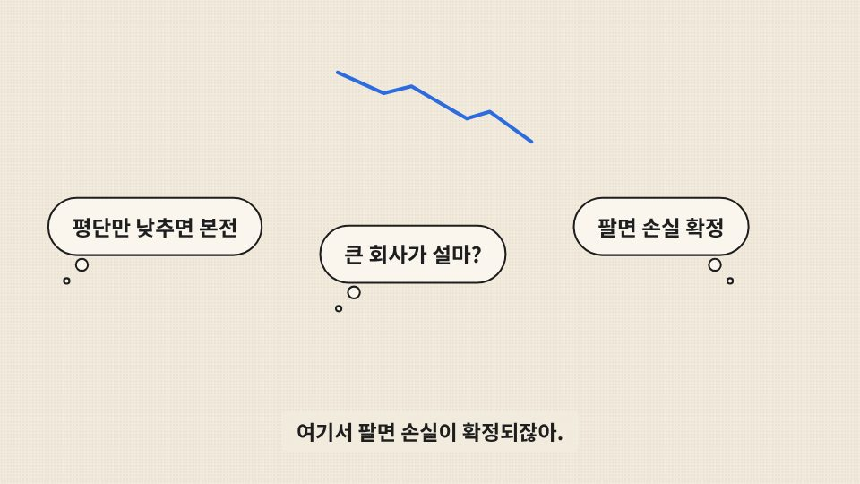
S07 문장 15–18 · 1:27.9 · 크림 · 와이프
- 15 산 종목이 계속 떨어질 때 많은 분들이 이런 생각을 하죠.
- 16 평단만 낮추면 조금만 올라도 본전이야.
- 17 이렇게 큰 회사가 설마 망하겠어?
- 18 여기서 팔면 손실이 확정되잖아.
연출 15: 계속 떨어지는 파랑 선 / 16·17·18: 생각 말풍선이 자막마다 하나씩
연결 근거 문장 15 '산 종목이 계속 떨어질 때' / 16 '평단만 낮추면 … 본전' / 17 '큰 회사가 설마' / 18 '팔면 손실이 확정'
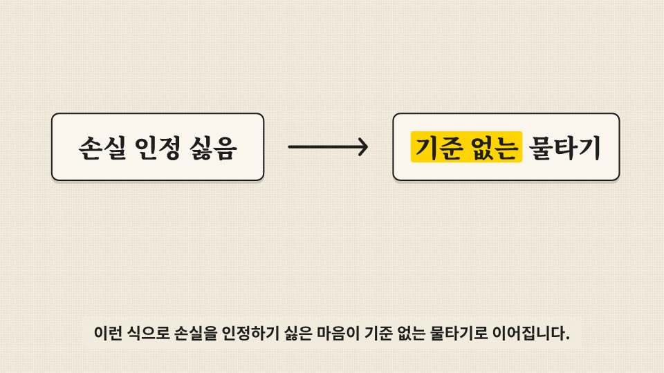
S08 문장 19 · 1:34.0 · 크림
- 19 이런 식으로 손실을 인정하기 싫은 마음이 기준 없는 물타기로 이어집니다.
연출 19: '손실 인정 싫음' → 화살표 → '기준 없는 물타기'(기준 없는 = 형광펜)
연결 근거 문장 19 '손실을 인정하기 싫은 마음이 기준 없는 물타기로'
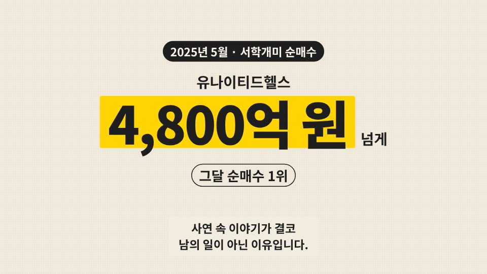
S09 문장 20–22 · 1:52.2 · 크림
- 20 실제로 2025년 5월 한 달간 서학개미는 / 이 종목을 4,800억 원 넘게 순매수했습니다.
- 21 미국 주식에 투자하는 국내 투자자들이 그달 가장 많이 사들인 종목이었죠.
- 22 사연 속 이야기가 결코 남의 일이 아닌 이유입니다.
연출 20: 칩 '2025년 5월 · 서학개미' / (뒷줄) '순매수', 유나이티드헬스, 4,800억 원 카운트 + '넘게' / 21: '그달 순매수 1위' / 22: 4,800억 원 형광펜
연결 근거 문장 20 '2025년 5월 한 달간 서학개미는 … 4,800억 원 넘게 순매수' / 21 '그달 가장 많이 사들인 종목' / 22 '남의 일이 아닌 이유' → 강조
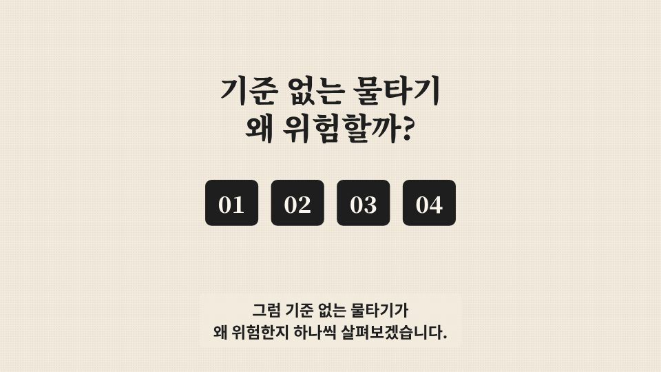
S10 문장 23 · 1:57.4 · 크림
- 23 그럼 기준 없는 물타기가 왜 위험한지 하나씩 살펴보겠습니다.
연출 23: '기준 없는 물타기 / 왜 위험할까?' → 번호 01~04가 차례로
연결 근거 문장 23 '왜 위험한지 하나씩 살펴보겠습니다' → 문제 4개 번호

고지 카드 문장 23 뒤 · 1:57.7–2:05.7
투자 권유가 아닙니다 — 이 영상은 투자 교육과 정보 제공을 위한 것이며, 특정 종목의 매수나 매도를 권유하지 않습니다. / 사연 속 금액과 계산은 이해를 돕기 위한 예시입니다. / 과거 주가와 통계는 미래 수익을 보장하지 않으며, 원금 손실이 생길 수 있습니다. / 투자 판단과 책임은 투자자 본인에게 있습니다.
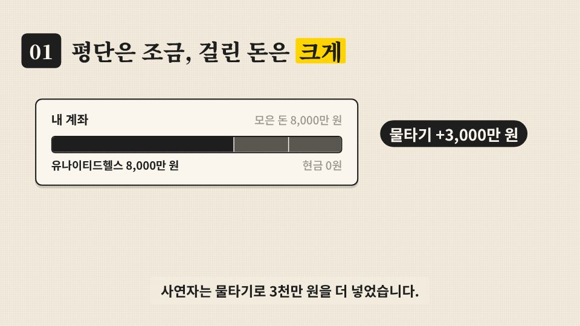
S11 문장 24–25 · 2:15.5 · 크림
- 24 첫 번째 문제는 평단은 조금 내려가도 걸린 돈은 크게 늘어난다는 것입니다.
- 25 사연자는 물타기로 3천만 원을 더 넣었습니다.
연출 24: 번호 타이틀 01 ('크게' 형광펜) / 25: S02 계좌 카드(간단형), 막대에 물타기 조각 +3,000만 원이 붙음
연결 근거 문장 24 '평단은 조금 내려가도 걸린 돈은 크게' / 25 '물타기로 3천만 원을 더 넣었습니다'
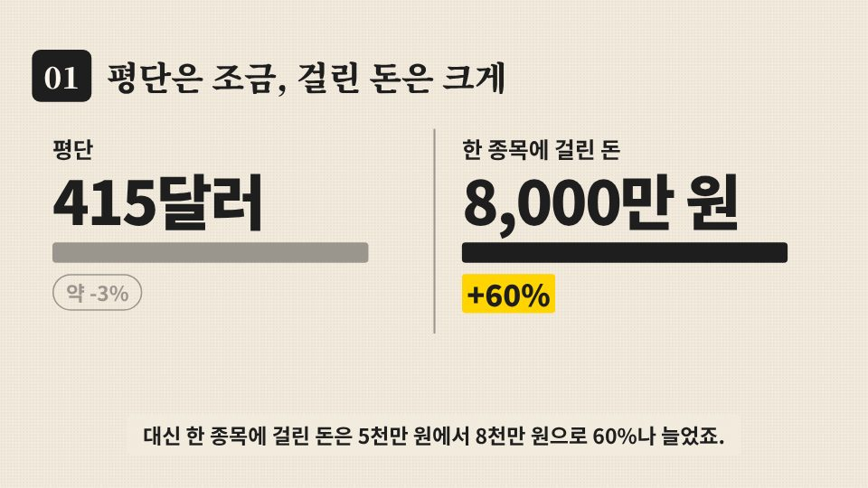
S12 문장 26–27 · 2:28.7 · 크림
- 26 그 덕에 평단은 428달러에서 415달러로 3% 정도 내려갔습니다.
- 27 대신 한 종목에 걸린 돈은 5천만 원에서 8천만 원으로 60%나 늘었죠.
연출 26: 왼쪽 평단 428 → 415달러, 막대 살짝 줄고 '약 -3%'(회색) / 27: 오른쪽 걸린 돈 5,000만 → 8,000만 원, 막대 크게 늘고 +60% 형광펜
연결 근거 문장 26 '428달러에서 415달러로 3% 정도' / 27 '5천만 원에서 8천만 원으로 60%나'
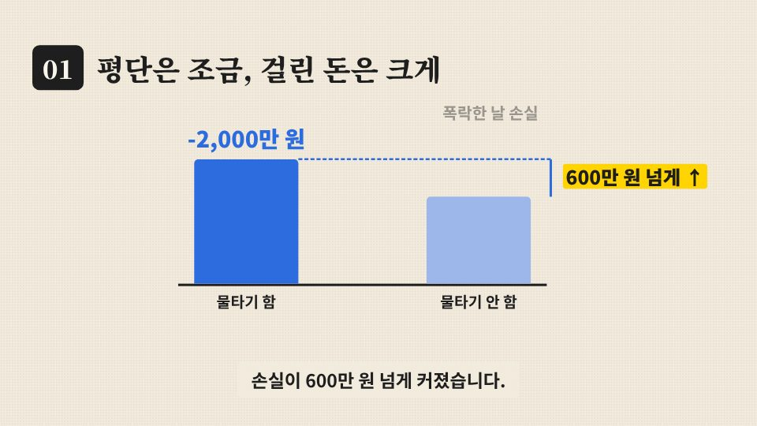
S13-28 문장 28 · 2:35.2 · 크림
- 28 그래서 폭락한 날, 물타기를 안 했을 때보다 / 손실이 600만 원 넘게 커졌습니다.
연출 28: 폭락한 날 손실 막대 — 물타기 함 -2,000만 원(파랑) vs 물타기 안 함(연한 파랑, 숫자 없음) / (뒷줄) 차이 '600만 원 넘게 ↑' / 29: 같은 종목 위에 5,000만 + 1,500만 + 1,500만 블록, '평단 낮추기 = 돈을 더 거는 일'
연결 근거 문장 28 '물타기를 안 했을 때보다 손실이 600만 원 넘게' (안 했을 때 막대 길이 = 2,000-600 = 1,400 비율, facts.noAvgLoss) / 29 '같은 종목에 돈을 더 거는 일'
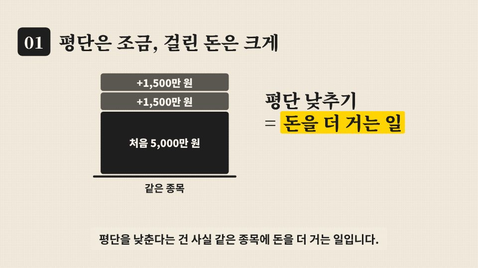
S13 문장 28–29 · 2:40.2 · 크림
- 28 그래서 폭락한 날, 물타기를 안 했을 때보다 / 손실이 600만 원 넘게 커졌습니다.
- 29 평단을 낮춘다는 건 사실 같은 종목에 돈을 더 거는 일입니다.
연출 28: 폭락한 날 손실 막대 — 물타기 함 -2,000만 원(파랑) vs 물타기 안 함(연한 파랑, 숫자 없음) / (뒷줄) 차이 '600만 원 넘게 ↑' / 29: 같은 종목 위에 5,000만 + 1,500만 + 1,500만 블록, '평단 낮추기 = 돈을 더 거는 일'
연결 근거 문장 28 '물타기를 안 했을 때보다 손실이 600만 원 넘게' (안 했을 때 막대 길이 = 2,000-600 = 1,400 비율, facts.noAvgLoss) / 29 '같은 종목에 돈을 더 거는 일'
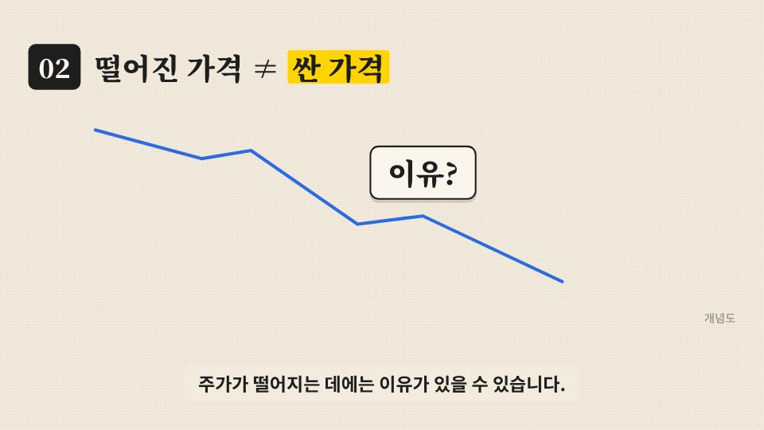
S14 문장 30–31 · 2:49.1 · 크림 · 와이프
- 30 두 번째는 떨어진 가격이 곧 싼 가격은 아니라는 것입니다.
- 31 주가가 떨어지는 데에는 이유가 있을 수 있습니다.
연출 30: 번호 타이틀 02 ('싼 가격' 형광펜) / 31: 떨어지는 선(개념도) + '이유?' 카드
연결 근거 문장 30 '떨어진 가격이 곧 싼 가격은 아니라는 것' / 31 '떨어지는 데에는 이유가 있을 수 있습니다'
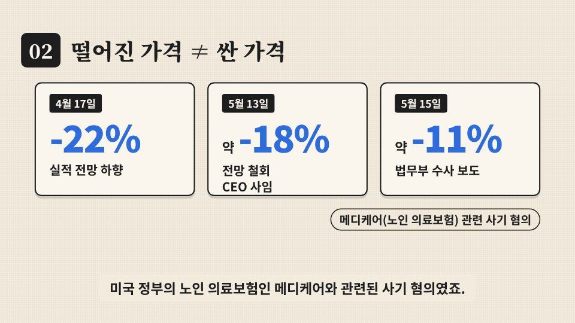
S15 문장 32–36 · 3:18.2 · 크림
- 32 유나이티드헬스는 4월 17일 실적 전망을 / 낮추면서 하루 만에 22% 떨어졌습니다.
- 33 5월 13일에는 전망 철회와 CEO 사임이 겹치며 / 또 18% 가까이 폭락했습니다.
- 34 이틀 뒤에는 11% 가까이 더 빠졌죠.
- 35 미국 법무부가 이 회사를 수사 중이라는 보도 때문이었습니다.
- 36 미국 정부의 노인 의료보험인 메디케어와 관련된 사기 혐의였죠.
연출 32: 사례 카드① 4월 17일 / (뒷줄) 실적 전망 하향 · -22% / 33: 카드② 5월 13일 · 전망 철회 · CEO 사임 / (뒷줄) 약 -18% / 34: 카드③ 5월 15일 · 약 -11% / 35: 카드③ 원인 '법무부 수사 보도' / 36: 태그 '메디케어(노인 의료보험) 관련 사기 혐의'
연결 근거 문장 32 '4월 17일 … 22%' / 33 '5월 13일 … 전망 철회와 CEO 사임 … 18% 가까이' / 34 '이틀 뒤 11% 가까이'(5월 15일 = 13일 + 이틀) / 35 '법무부가 수사 중이라는 보도' / 36 '메디케어와 관련된 사기 혐의'
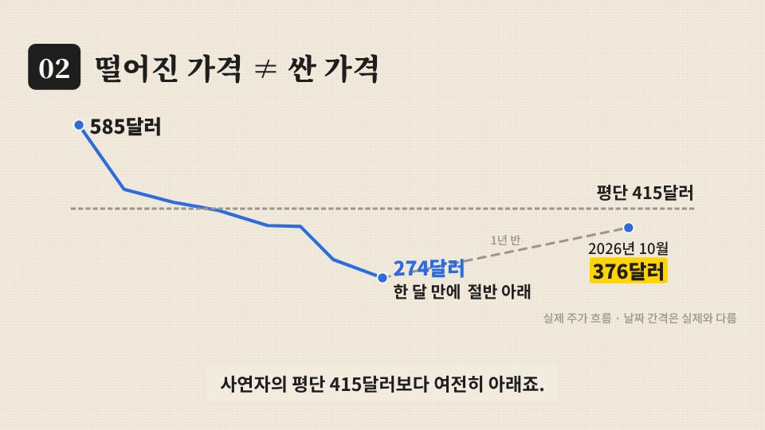
S16 문장 37–39 · 3:36.4 · 크림
- 37 그렇게 585달러이던 주가는 한 달 만에 274달러, 절반 아래로 떨어졌습니다.
- 38 1년 반이 지난 2026년 10월에도 주가는 376달러 정도입니다.
- 39 사연자의 평단 415달러보다 여전히 아래죠.
연출 37: 실제 종가 선 585 → 274달러(4/16~5/15), '한 달 만에 절반 아래' 형광펜 / 38: 회색 점선 '1년 반' → 2026년 10월 376달러 / 39: 평단 415달러 점선, 376달러 형광펜
연결 근거 문장 37 '585달러이던 주가는 한 달 만에 274달러, 절반 아래' / 38 '2026년 10월에도 376달러' / 39 '평단 415달러보다 여전히 아래'. 선의 꺾임은 README의 실제 종가(4/17 454, 4/23 428, 4/30 411, 5/9 381, 5/12 379, 5/13 311)로 그렸고 숫자는 표시하지 않음
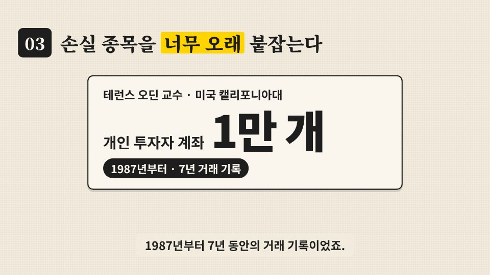
S17 문장 40–42 · 3:53.2 · 크림 · 와이프
- 40 세 번째는 사람이 원래 손실 난 종목을 너무 오래 붙잡는다는 것입니다.
- 41 미국 캘리포니아대 테런스 오딘 교수가 / 개인 투자자 계좌 1만 개를 분석했습니다.
- 42 1987년부터 7년 동안의 거래 기록이었죠.
연출 40: 번호 타이틀 03 ('너무 오래' 형광펜) / 41: 연구 카드 '테런스 오딘 교수 · 미국 캘리포니아대' / (뒷줄) 개인 투자자 계좌 1만 개 / 42: 칩 '1987년부터 · 7년 거래 기록'
연결 근거 문장 40 '손실 난 종목을 너무 오래 붙잡는다' / 41 '테런스 오딘 교수가 개인 투자자 계좌 1만 개' / 42 '1987년부터 7년 동안의 거래 기록'
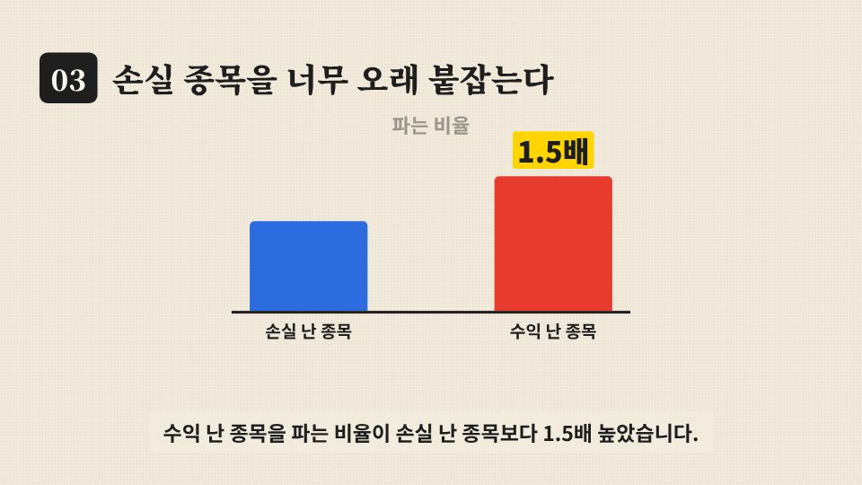
S18-43 문장 43 · 3:58.5 · 크림
- 43 수익 난 종목을 파는 비율이 손실 난 종목보다 1.5배 높았습니다.
연출 43: 파는 비율 막대 — 수익 난 종목(빨강)이 손실 난 종목(파랑)의 1.5배 / 44: '그 뒤 1년 수익률'로 바뀌고 판 수익 종목 막대 / 45: 붙잡은 손실 종목 막대 + 차이 '3.4%p 더 높음'
연결 근거 문장 43 '수익 난 종목을 파는 비율이 … 1.5배' (막대 비율 1.5) / 44 '팔아 버린 수익 종목이 그 뒤 1년 동안 더 잘 올랐습니다' / 45 '3.4%포인트 더 높았죠' (두 막대 높이는 개념도)
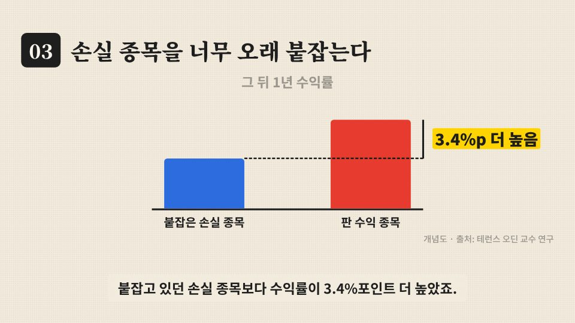
S18 문장 43–45 · 4:09.2 · 크림
- 43 수익 난 종목을 파는 비율이 손실 난 종목보다 1.5배 높았습니다.
- 44 그런데 팔아 버린 수익 종목이 그 뒤 1년 동안 더 잘 올랐습니다.
- 45 붙잡고 있던 손실 종목보다 수익률이 3.4%포인트 더 높았죠.
연출 43: 파는 비율 막대 — 수익 난 종목(빨강)이 손실 난 종목(파랑)의 1.5배 / 44: '그 뒤 1년 수익률'로 바뀌고 판 수익 종목 막대 / 45: 붙잡은 손실 종목 막대 + 차이 '3.4%p 더 높음'
연결 근거 문장 43 '수익 난 종목을 파는 비율이 … 1.5배' (막대 비율 1.5) / 44 '팔아 버린 수익 종목이 그 뒤 1년 동안 더 잘 올랐습니다' / 45 '3.4%포인트 더 높았죠' (두 막대 높이는 개념도)
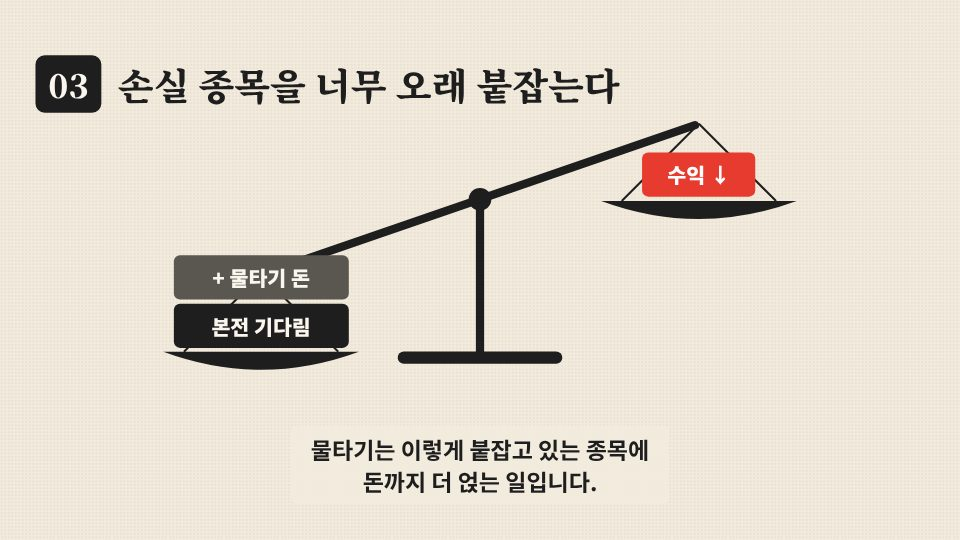
S19 문장 46–47 · 4:19.2 · 크림
- 46 본전을 기다리는 마음이 오히려 수익을 깎아 먹은 겁니다.
- 47 물타기는 이렇게 붙잡고 있는 종목에 돈까지 더 얹는 일입니다.
연출 46: 천칭 저울 — 왼쪽 '본전 기다림'이 무거워 기울고, 오른쪽 '수익'(빨강)이 줄어듦 / 47: 왼쪽에 '+ 물타기 돈'이 얹혀 더 기울어짐
연결 근거 문장 46 '본전을 기다리는 마음이 오히려 수익을 깎아 먹은' / 47 '붙잡고 있는 종목에 돈까지 더 얹는 일'
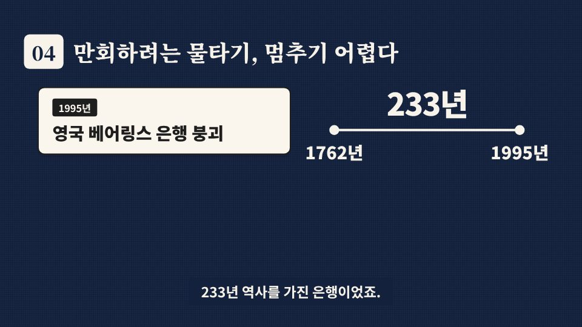
S20-50 문장 50 · 4:33.7 · 네이비 · 와이프
연출 48: 번호 타이틀 04 / 49: 뉴스 카드 '1995년 · 영국 베어링스 은행 붕괴' / 50: 타임라인 1762년 → 1995년, 233년 / 51: 타임라인 퇴장, '싱가포르 지점 · 27살 트레이더 닉 리슨' / (뒷줄) 점점 커지는 베팅 막대 4개(개념도)
연결 근거 문장 49 '1995년 영국 베어링스 은행이 무너졌습니다' / 50 '233년 역사' (1762 = 1995 - 233) / 51 '27살 트레이더 닉 리슨이 손실이 날 때마다 베팅을 키운'
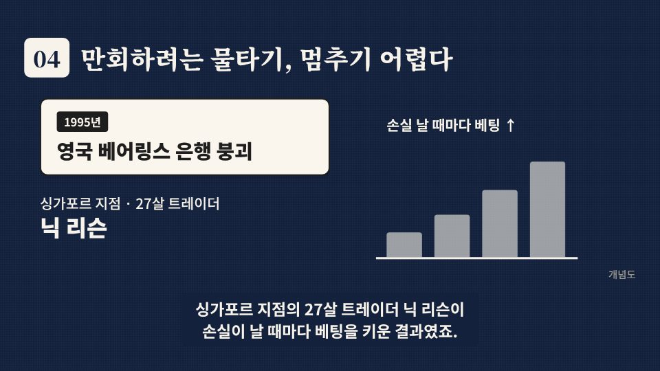
S20 문장 48–51 · 4:40.8 · 네이비 · 와이프
- 48 네 번째는 손실을 만회하려는 물타기는 갈수록 멈추기 어렵다는 것입니다.
- 49 1995년에는 영국 베어링스 은행이 무너졌습니다.
- 50 233년 역사를 가진 은행이었죠.
- 51 싱가포르 지점의 27살 트레이더 닉 리슨이 / 손실이 날 때마다 베팅을 키운 결과였죠.
연출 48: 번호 타이틀 04 / 49: 뉴스 카드 '1995년 · 영국 베어링스 은행 붕괴' / 50: 타임라인 1762년 → 1995년, 233년 / 51: 타임라인 퇴장, '싱가포르 지점 · 27살 트레이더 닉 리슨' / (뒷줄) 점점 커지는 베팅 막대 4개(개념도)
연결 근거 문장 49 '1995년 영국 베어링스 은행이 무너졌습니다' / 50 '233년 역사' (1762 = 1995 - 233) / 51 '27살 트레이더 닉 리슨이 손실이 날 때마다 베팅을 키운'
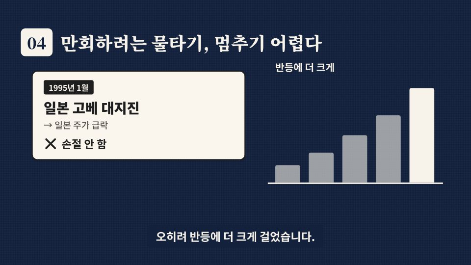
S21-53 문장 53 · 4:50.9 · 네이비
연출 52: 뉴스 카드 '1995년 1월 · 일본 고베 대지진' / (뒷줄) '→ 일본 주가 급락', ✗ 손절 안 함 / 53: S20 베팅 막대 옆에 더 큰 막대 '반등에 더 크게' / 54: 모두 퇴장, -8억 2,700만 파운드(파랑 박스) / (뒷줄) '은행은 단돈 1파운드에 매각' / 55: '본전 생각 앞에서 못 멈춤'(본전 생각 형광펜)
연결 근거 문장 52 '1월 일본 고베 대지진 … 손절하지 않았습니다' / 53 '반등에 더 크게 걸었습니다' / 54 '8억 2,700만 파운드 … 1파운드에 팔렸습니다' / 55 '본전 생각 앞에서는 멈추지 못한'
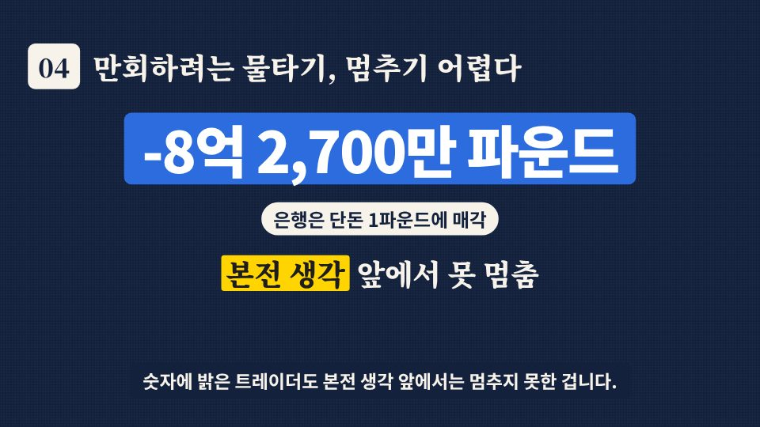
S21 문장 52–55 · 5:03.5 · 네이비
- 52 그해 1월 일본 고베 대지진으로 일본 주가가 / 급락했을 때도 그는 손절하지 않았습니다.
- 53 오히려 반등에 더 크게 걸었습니다.
- 54 손실은 8억 2,700만 파운드까지 불어났고, / 은행은 단돈 1파운드에 팔렸습니다.
- 55 숫자에 밝은 트레이더도 본전 생각 앞에서는 멈추지 못한 겁니다.
연출 52: 뉴스 카드 '1995년 1월 · 일본 고베 대지진' / (뒷줄) '→ 일본 주가 급락', ✗ 손절 안 함 / 53: S20 베팅 막대 옆에 더 큰 막대 '반등에 더 크게' / 54: 모두 퇴장, -8억 2,700만 파운드(파랑 박스) / (뒷줄) '은행은 단돈 1파운드에 매각' / 55: '본전 생각 앞에서 못 멈춤'(본전 생각 형광펜)
연결 근거 문장 52 '1월 일본 고베 대지진 … 손절하지 않았습니다' / 53 '반등에 더 크게 걸었습니다' / 54 '8억 2,700만 파운드 … 1파운드에 팔렸습니다' / 55 '본전 생각 앞에서는 멈추지 못한'
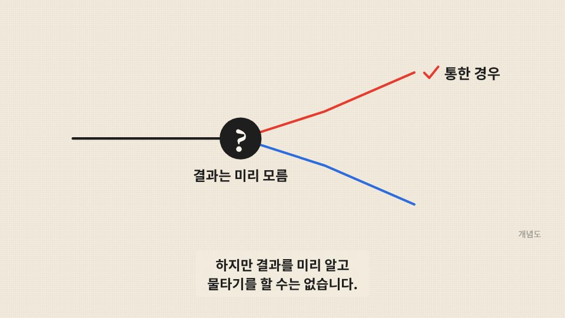
S22-57 문장 57 · 5:11.1 · 크림 · 와이프
- 57 하지만 결과를 미리 알고 물타기를 할 수는 없습니다.
연출 56: 갈림길 선 — 위로 가는 빨강 선 + ✓ '통한 경우' / 57: 아래로 가는 파랑 선 + 갈림길에 '?' + '결과는 미리 모름' / 58: 갈림길 퇴장, '물타기 · 손절 / 어떤 기준으로?'
연결 근거 문장 56 '물타기가 통한 경우도 있습니다' / 57 '결과를 미리 알고 물타기를 할 수는 없습니다' / 58 '어떤 기준으로 해야 할까요?'
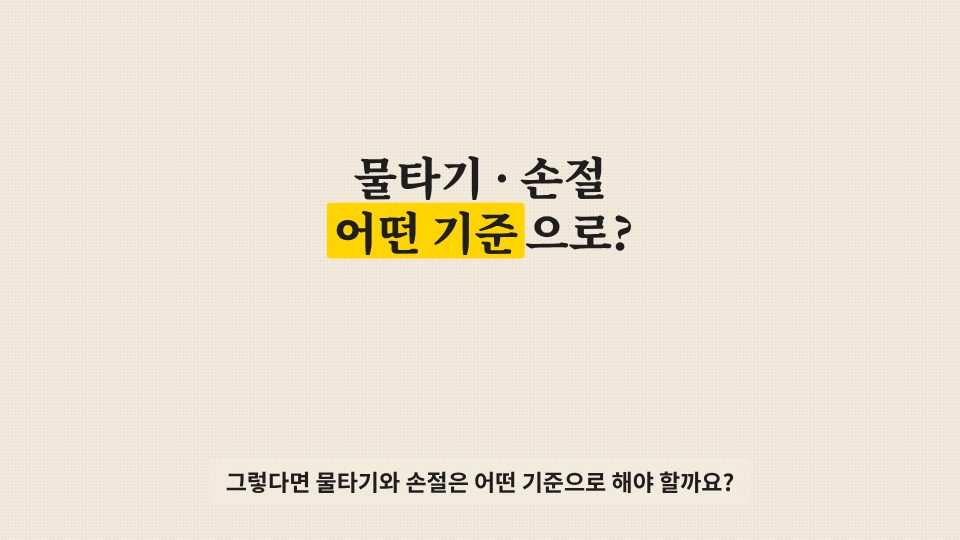
S22 문장 56–58 · 5:15.7 · 크림 · 와이프
- 56 물론 물타기가 통한 경우도 있습니다.
- 57 하지만 결과를 미리 알고 물타기를 할 수는 없습니다.
- 58 그렇다면 물타기와 손절은 어떤 기준으로 해야 할까요?
연출 56: 갈림길 선 — 위로 가는 빨강 선 + ✓ '통한 경우' / 57: 아래로 가는 파랑 선 + 갈림길에 '?' + '결과는 미리 모름' / 58: 갈림길 퇴장, '물타기 · 손절 / 어떤 기준으로?'
연결 근거 문장 56 '물타기가 통한 경우도 있습니다' / 57 '결과를 미리 알고 물타기를 할 수는 없습니다' / 58 '어떤 기준으로 해야 할까요?'
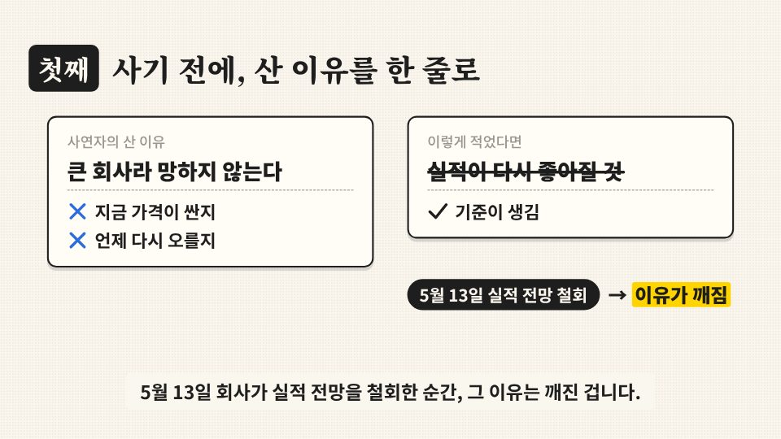
S23 문장 59–63 · 5:43.1 · 밝은 크림 · 와이프
- 59 첫째, 사기 전에 이 종목을 사는 이유를 한 줄로 적어 두는 것입니다.
- 60 사연자의 이유는 큰 회사라 망하지 않는다는 것이었습니다.
- 61 이 이유로는 지금 가격이 싼지, 언제 다시 오를지 판단할 수 없습니다.
- 62 반대로 실적이 다시 좋아질 것이라고 적었다면 기준이 생깁니다.
- 63 5월 13일 회사가 실적 전망을 철회한 순간, 그 이유는 깨진 겁니다.
연출 59: 밝은 크림 전환, 번호 타이틀 '첫째', 빈 메모 카드 / 60: '큰 회사라 망하지 않는다'가 써짐 / 61: ✗ 지금 가격이 싼지, ✗ 언제 다시 오를지 / 62: 오른쪽 메모 '실적이 다시 좋아질 것' + ✓ 기준이 생김 / 63: '5월 13일 실적 전망 철회' 칩 → 취소선 + '이유가 깨짐' 형광펜
연결 근거 문장 59 '사는 이유를 한 줄로 적어 두는 것' / 60 '큰 회사라 망하지 않는다' / 61 '지금 가격이 싼지, 언제 다시 오를지 판단할 수 없습니다' / 62 '실적이 다시 좋아질 것이라고 적었다면 기준이 생깁니다' / 63 '5월 13일 … 철회한 순간, 그 이유는 깨진 겁니다'
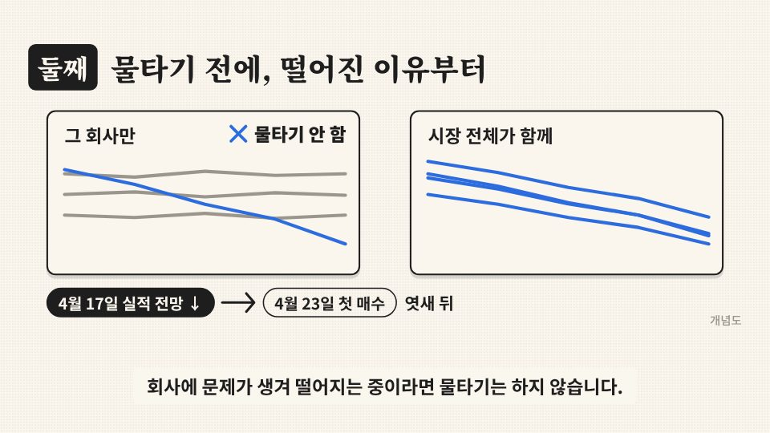
S24 문장 64–67 · 6:06.8 · 밝은 크림
- 64 둘째, 주가가 떨어지면 물타기 전에 떨어진 이유부터 확인하는 것입니다.
- 65 시장 전체가 함께 빠진 건지, 그 회사에만 문제가 생긴 건지 나눠 봐야 합니다.
- 66 사연자가 처음 산 4월 23일은 실적 전망을 낮춘 지 엿새 뒤였습니다.
- 67 회사에 문제가 생겨 떨어지는 중이라면 물타기는 하지 않습니다.
연출 64: 번호 타이틀 '둘째' / 65: 오른쪽 패널 '시장 전체가 함께'(파랑 선 4개 모두 하락) → 왼쪽 패널 '그 회사만'(회색 선 3개 평평, 파랑 선 1개만 하락) / 66: '4월 17일 실적 전망 ↓ → 4월 23일 첫 매수 · 엿새 뒤' / 67: 왼쪽 패널에 ✗ 물타기 안 함
연결 근거 문장 65 '시장 전체가 함께 빠진 건지, 그 회사에만 문제가 생긴 건지' / 66 '4월 23일은 실적 전망을 낮춘 지 엿새 뒤' / 67 '회사에 문제가 생겨 떨어지는 중이라면 물타기는 하지 않습니다'
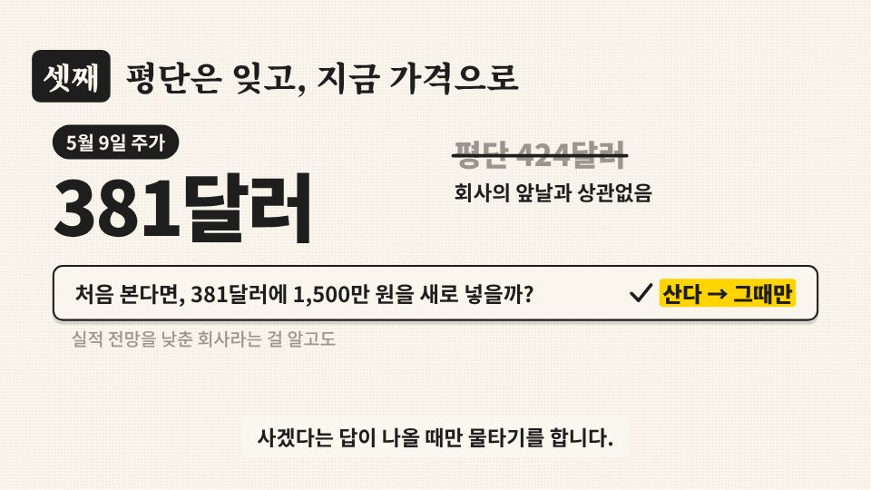
S25 문장 68–72 · 6:39.1 · 밝은 크림
- 68 셋째, 물타기를 하기 전에 평단은 잊고 / 지금 가격에서 다시 판단하는 것입니다.
- 69 사연자가 마지막 물타기를 한 5월 9일 주가는 381달러였습니다.
- 70 그때 평단 424달러는 회사의 앞날과 아무 상관이 없는 숫자입니다.
- 71 381달러인 이 회사를 처음 본다면 1,500만 원을 새로 넣을지 물어보는 거죠.
- 72 실적 전망을 낮춘 회사라는 걸 알고도 / 사겠다는 답이 나올 때만 물타기를 합니다.
연출 68: 번호 타이틀 '셋째 평단은 잊고,' / (뒷줄) '지금 가격으로' / 69: '5월 9일 주가' 381달러 / 70: '평단 424달러'(회색)에 취소선 + '회사의 앞날과 상관없음' / 71: 질문 카드 '처음 본다면, 381달러에 1,500만 원을 새로 넣을까?' / 72: '실적 전망을 낮춘 회사라는 걸 알고도' / (뒷줄) ✓ '산다 → 그때만'
연결 근거 문장 69 '5월 9일 주가는 381달러' / 70 '평단 424달러는 회사의 앞날과 아무 상관이 없는 숫자' / 71 '처음 본다면 1,500만 원을 새로 넣을지' / 72 '알고도 사겠다는 답이 나올 때만 물타기'
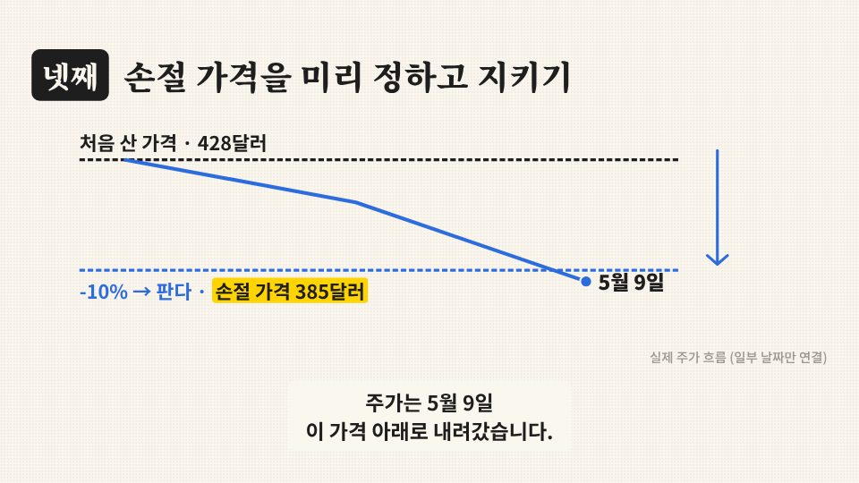
S26 문장 73–76 · 7:00.4 · 밝은 크림 · 와이프
- 73 넷째, 손절 가격을 미리 정해 두고 지키는 것입니다.
- 74 예를 들어 처음 산 가격보다 10% 떨어지면 판다고 정하는 겁니다.
- 75 사연자라면 손절 가격은 428달러보다 10% 낮은 385달러입니다.
- 76 주가는 5월 9일 이 가격 아래로 내려갔습니다.
연출 73: 번호 타이틀 '넷째' / 74: 처음 산 가격 선(잉크)과 -10% 선(파랑 점선), 화살표 / 75: 428달러 · 손절 가격 385달러(형광펜) / 76: 실제 종가 선(4/23 → 4/30 → 5/9)이 385 아래로, '5월 9일'
연결 근거 문장 74 '처음 산 가격보다 10% 떨어지면 판다' / 75 '428달러보다 10% 낮은 385달러' / 76 '5월 9일 이 가격 아래로'
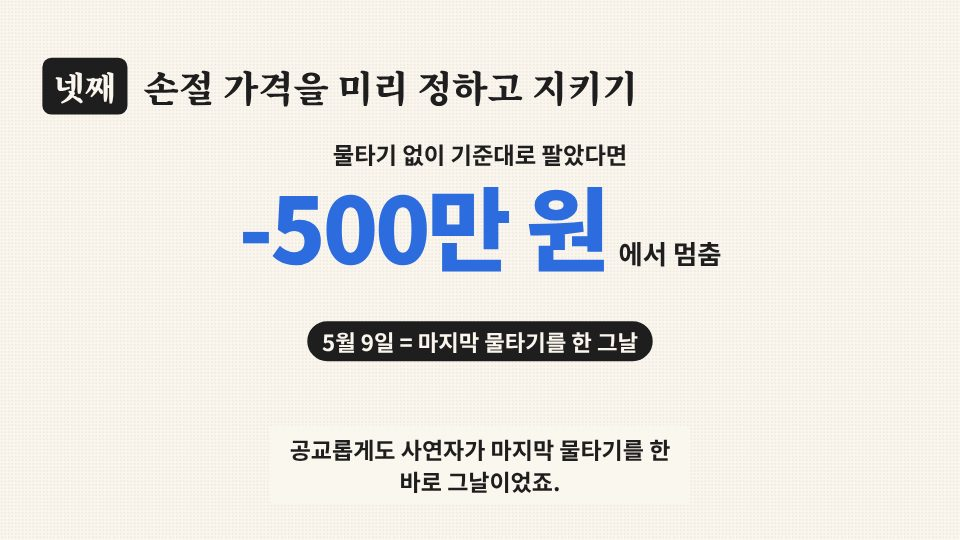
S27-78 문장 78 · 7:11.3 · 밝은 크림
- 78 공교롭게도 사연자가 마지막 물타기를 한 바로 그날이었죠.
연출 77: '물타기 없이 기준대로 팔았다면' -500만 원에서 멈춤 / 78: 칩 '5월 9일 = 마지막 물타기를 한 그날' / 79: 화면 분할 — 오른쪽 기준 있음 -500만 원 / (뒷줄) 왼쪽 기준 없음 -2,000만 원 / 80: 휴대폰 '자동 매도' 스위치가 켜짐, 손절 가격 385달러
연결 근거 문장 77 '손실은 500만 원에서' / 78 '마지막 물타기를 한 바로 그날' / 79 '500만 원에서 멈췄을 그날, -2천만 원 쪽으로' / 80 '자동 매도 기능이 있다면 걸어 두는 것'
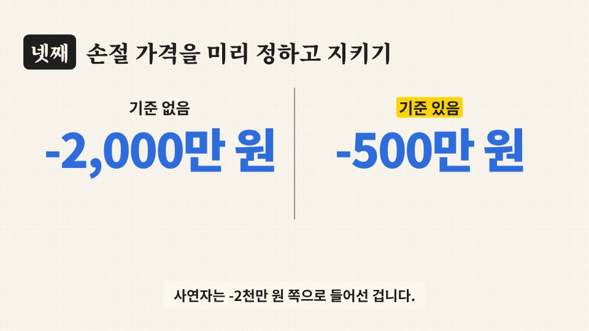
S27-79 문장 79 · 7:19.3 · 밝은 크림
- 79 기준이 있었다면 500만 원에서 멈췄을 그날, / 사연자는 -2천만 원 쪽으로 들어선 겁니다.
연출 77: '물타기 없이 기준대로 팔았다면' -500만 원에서 멈춤 / 78: 칩 '5월 9일 = 마지막 물타기를 한 그날' / 79: 화면 분할 — 오른쪽 기준 있음 -500만 원 / (뒷줄) 왼쪽 기준 없음 -2,000만 원 / 80: 휴대폰 '자동 매도' 스위치가 켜짐, 손절 가격 385달러
연결 근거 문장 77 '손실은 500만 원에서' / 78 '마지막 물타기를 한 바로 그날' / 79 '500만 원에서 멈췄을 그날, -2천만 원 쪽으로' / 80 '자동 매도 기능이 있다면 걸어 두는 것'
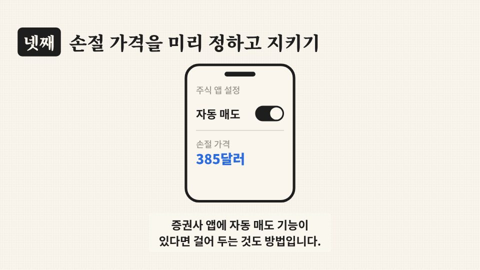
S27 문장 77–80 · 7:24.7 · 밝은 크림
- 77 물타기 없이 이 기준대로 팔았다면 손실은 500만 원에서 멈췄을 겁니다.
- 78 공교롭게도 사연자가 마지막 물타기를 한 바로 그날이었죠.
- 79 기준이 있었다면 500만 원에서 멈췄을 그날, / 사연자는 -2천만 원 쪽으로 들어선 겁니다.
- 80 증권사 앱에 자동 매도 기능이 있다면 걸어 두는 것도 방법입니다.
연출 77: '물타기 없이 기준대로 팔았다면' -500만 원에서 멈춤 / 78: 칩 '5월 9일 = 마지막 물타기를 한 그날' / 79: 화면 분할 — 오른쪽 기준 있음 -500만 원 / (뒷줄) 왼쪽 기준 없음 -2,000만 원 / 80: 휴대폰 '자동 매도' 스위치가 켜짐, 손절 가격 385달러
연결 근거 문장 77 '손실은 500만 원에서' / 78 '마지막 물타기를 한 바로 그날' / 79 '500만 원에서 멈췄을 그날, -2천만 원 쪽으로' / 80 '자동 매도 기능이 있다면 걸어 두는 것'
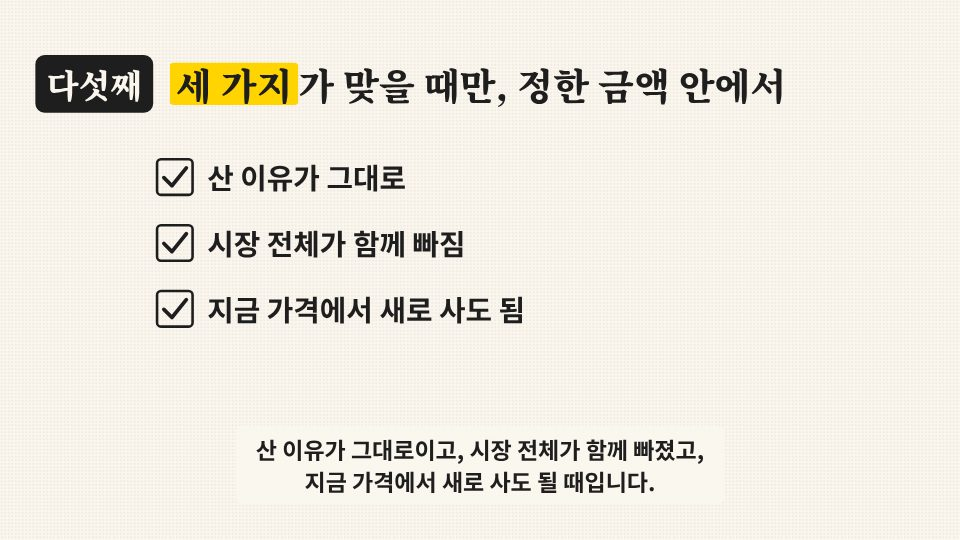
S28 문장 81–82 · 7:38.7 · 밝은 크림 · 와이프
- 81 다섯째, 물타기는 세 가지가 모두 맞을 때만, / 정해 둔 금액 안에서 하는 것입니다.
- 82 산 이유가 그대로이고, 시장 전체가 함께 빠졌고, / 지금 가격에서 새로 사도 될 때입니다.
연출 81: 번호 타이틀 '다섯째 세 가지가 맞을 때만,' ('세 가지' 형광펜) / (뒷줄) '정한 금액 안에서' / 82: 체크리스트 3줄이 말하는 순서대로 체크 (셋째 줄은 뒷줄과 함께)
연결 근거 문장 81 '세 가지가 모두 맞을 때만, 정해 둔 금액 안에서' / 82 '산 이유가 그대로이고, 시장 전체가 함께 빠졌고, 지금 가격에서 새로 사도 될 때'
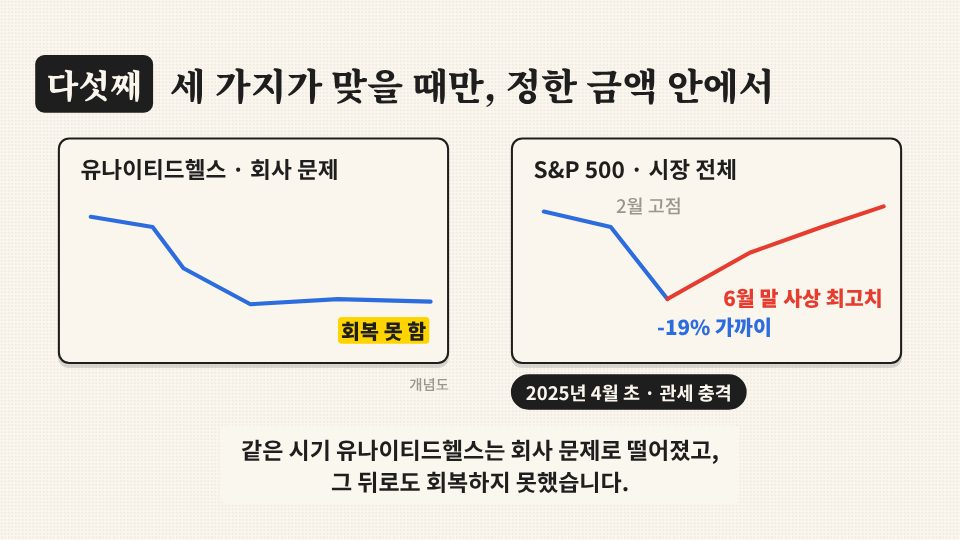
S29 문장 83–86 · 8:04.3 · 밝은 크림
- 83 시장 전체가 빠진 예로는 2025년 4월 초가 있습니다.
- 84 미국 대표 지수인 S&P 500이 관세 충격으로 / 2월 고점보다 19% 가까이 떨어졌죠.
- 85 이 하락은 석 달이 안 돼 회복돼, 6월 말 사상 최고치를 다시 넘었습니다.
- 86 같은 시기 유나이티드헬스는 회사 문제로 떨어졌고, / 그 뒤로도 회복하지 못했습니다.
연출 83: S24와 같은 패널 'S&P 500 · 시장 전체' + 칩 '2025년 4월 초' / 84: 칩에 '관세 충격' / (뒷줄) 2월 고점 → 파랑 선 하락 '-19% 가까이' / 85: 빨강 선 회복 '6월 말 사상 최고치' / 86: 왼쪽 패널 '유나이티드헬스 · 회사 문제', 파랑 선 하락 / (뒷줄) '회복 못 함' 형광펜
연결 근거 문장 83 '시장 전체가 빠진 예로는 2025년 4월 초' / 84 'S&P 500이 관세 충격으로 2월 고점보다 19% 가까이' / 85 '6월 말 사상 최고치를 다시 넘었습니다' / 86 '유나이티드헬스는 회사 문제로 떨어졌고 … 회복하지 못했습니다'
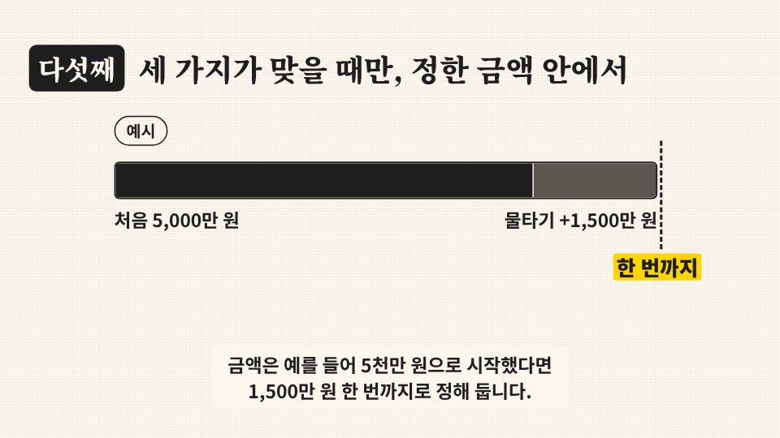
S30 문장 87 · 8:11.2 · 밝은 크림
- 87 금액은 예를 들어 5천만 원으로 시작했다면 / 1,500만 원 한 번까지로 정해 둡니다.
연출 87: '예시' 칩, 막대 처음 5,000만 원 / (뒷줄) 물타기 +1,500만 원 조각 → 끝에 점선 + '한 번까지' 형광펜
연결 근거 문장 87 '5천만 원으로 시작했다면 1,500만 원 한 번까지로 정해 둡니다'
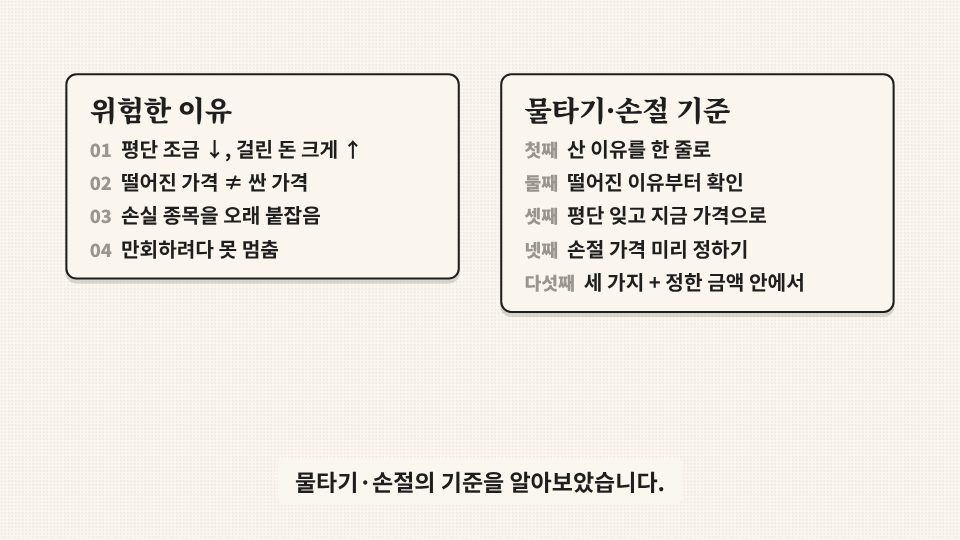
S31-88 문장 88 · 8:18.3 · 밝은 크림
- 88 이렇게 해서 기준 없는 물타기가 위험한 이유와 / 물타기·손절의 기준을 알아보았습니다.
연출 88: 두 열 요약 — 왼쪽 '위험한 이유' 01~04 / (뒷줄) 오른쪽 '물타기·손절 기준' 첫째~다섯째 / 89: 휴대폰 '물타기 전에' 산 이유 ✓ · 손절 가격 ✓ → 물타기 버튼 활성 / 90: '성공 투자' / 91: 끝까지 유지 후 페이드아웃
연결 근거 문장 88 '위험한 이유와 물타기·손절의 기준' / 89 '물타기 버튼을 누르기 전에 산 이유와 손절 가격부터 다시 확인' / 90 '성공 투자 하셨으면'
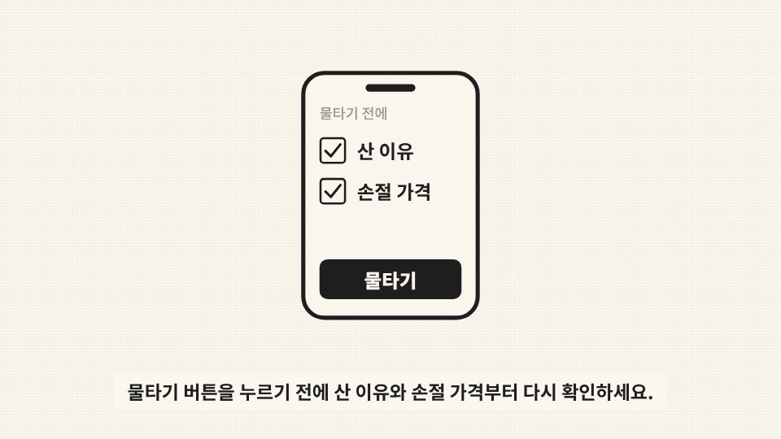
S31-89 문장 89 · 8:24.0 · 밝은 크림
- 89 물타기 버튼을 누르기 전에 산 이유와 손절 가격부터 다시 확인하세요.
연출 88: 두 열 요약 — 왼쪽 '위험한 이유' 01~04 / (뒷줄) 오른쪽 '물타기·손절 기준' 첫째~다섯째 / 89: 휴대폰 '물타기 전에' 산 이유 ✓ · 손절 가격 ✓ → 물타기 버튼 활성 / 90: '성공 투자' / 91: 끝까지 유지 후 페이드아웃
연결 근거 문장 88 '위험한 이유와 물타기·손절의 기준' / 89 '물타기 버튼을 누르기 전에 산 이유와 손절 가격부터 다시 확인' / 90 '성공 투자 하셨으면'
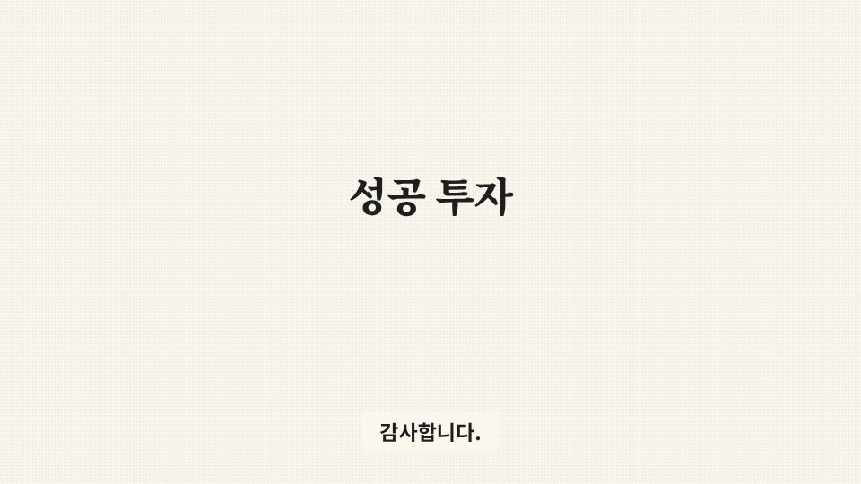
S31 문장 88–91 · 8:28.2 · 밝은 크림
- 88 이렇게 해서 기준 없는 물타기가 위험한 이유와 / 물타기·손절의 기준을 알아보았습니다.
- 89 물타기 버튼을 누르기 전에 산 이유와 손절 가격부터 다시 확인하세요.
- 90 성공 투자 하셨으면 좋겠습니다.
- 91 감사합니다.
연출 88: 두 열 요약 — 왼쪽 '위험한 이유' 01~04 / (뒷줄) 오른쪽 '물타기·손절 기준' 첫째~다섯째 / 89: 휴대폰 '물타기 전에' 산 이유 ✓ · 손절 가격 ✓ → 물타기 버튼 활성 / 90: '성공 투자' / 91: 끝까지 유지 후 페이드아웃
연결 근거 문장 88 '위험한 이유와 물타기·손절의 기준' / 89 '물타기 버튼을 누르기 전에 산 이유와 손절 가격부터 다시 확인' / 90 '성공 투자 하셨으면'